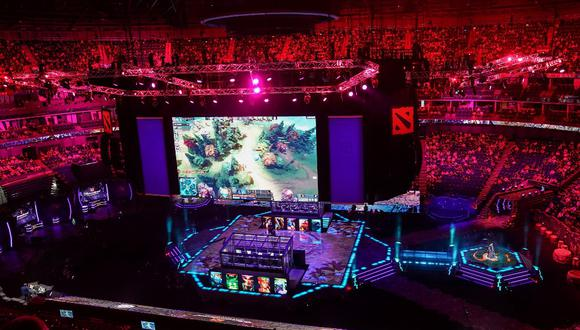
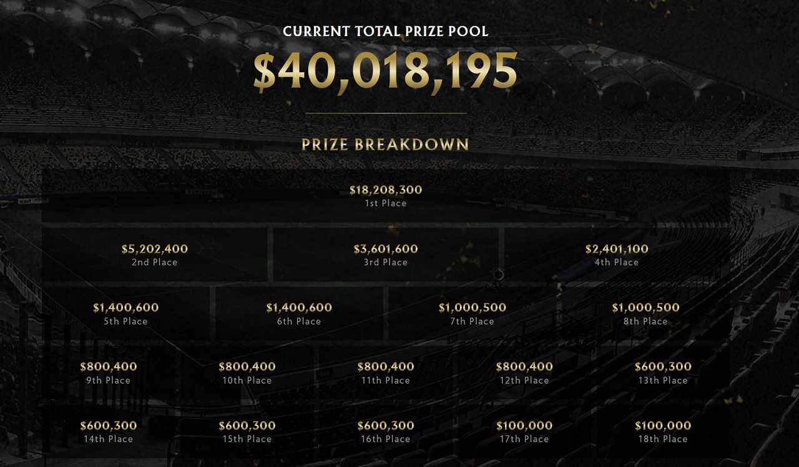

Dota 2 es un videojuego perteneciente al género de Arena de batalla en línea ARTS («estrategia de acción en tiempo real»), también conocido como MOBA, lanzado el 9 de julio del año 2013. El juego fue desarrollado por la empresa Valve Corporation. El título fue anunciado oficialmente el 13 de octubre de 2010, en un artículo en el sitio web Game Informer;1 posteriormente, entró en su etapa Beta a principios del 2011, y finalmente se lanzó al público en general a través de Steam el 9 de julio de 2013 para Microsoft Windows, y el 18 de julio de 2013 para OS X y Linux, el 21 de junio de 2015 Valve lanzó la beta del juego usando el nuevo motor gráfico Source 2 [Dota 2 Reborn], cliente que será el único y definitivo poco después del The International 2015 según el anuncio se mantuvo fiel a su predecesor, a la vez que incrementó la calidad del producto final, además de ofrecer una experiencia envolvente y gratificante para los jugadores. Sin embargo, Dota 2 es actualmente criticado por tener una dura curva de aprendizaje y una comunidad de las más hostiles en el ámbito de internet. Actualmente es el juego más jugado de Steam con más de 40.6 millones de jugadores2 únicos que se conectan casi en su totalidad con frecuencia diaria3 y ha llegado a ser incluido en el Guinness World Records Gamer's Edition.